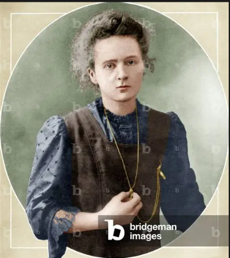

Radioactivity Research
Her research helped establish radioactivity as a major field of scientific investigation.
A PIONEER OF MODERN SCIENCE
A pioneering scientist whose discoveries transformed our understanding of radioactivity.
Explore Her Legacy ↓
Marie Curie was a pioneering physicist and chemist whose scientific work changed the way researchers understood radioactivity.
Marie Curie was born in Warsaw, Poland, in 1867. At a time when educational opportunities for women were limited, she remained determined to pursue scientific knowledge. Her ambition eventually led her to Paris, where she studied at the University of Paris.
In Paris, Curie began important scientific research and worked closely with Pierre Curie. Together, they investigated the unusual properties of radioactive materials and helped establish radioactivity as an important area of scientific study.
Her research led to the discovery of the elements polonium and radium. Her achievements earned her the Nobel Prize in Physics in 1903 and later the Nobel Prize in Chemistry in 1911.
Curie's scientific career became an example of determination, curiosity, and dedication to research. Her discoveries continued to influence medicine and scientific research long after her lifetime.
Her research helped establish radioactivity as a major field of scientific investigation.
Marie Curie and Pierre Curie discovered the elements polonium and radium through their research.
She became the first person to receive Nobel Prizes in two different scientific fields.
Her research contributed to developments that influenced modern scientific and medical applications.
Marie Curie was born in Warsaw, Poland.
She moved to Paris to continue her higher education and scientific studies.
Marie and Pierre Curie announced discoveries that expanded knowledge of radioactive elements.
Marie Curie received the Nobel Prize in Physics for her work on radiation phenomena.
She received a second Nobel Prize, this time in Chemistry, for her work on radium and polonium.
Nothing in life is to be feared, it is only to be understood.